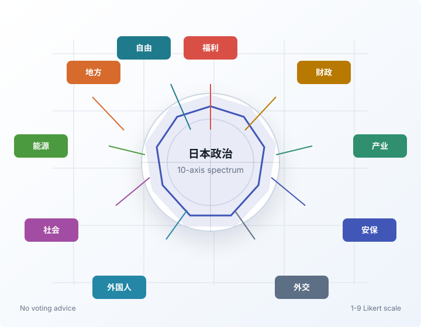

Japan political spectrum test
日本政治・社会価値観 スペクトラム診断
用 10 个维度测量你在日本政治、社会、经济、安全与制度议题上的相对位置。 它显示坐标、置信度和参考政策距离，但不告诉你“应该支持谁”。
1 表示强烈不同意，9 表示强烈同意；5 是中立或不确定。不了解的题可以跳过，跳过会降低对应维度置信度。

standard
第 1 题 / 70
0 / 70
result
现实主义混合型
组合标签
十维雷达
二维主图
再分配 / 克制
市场 / 正常化
再分配 / 和平
纪律 / 安保
结果
经济轴 0
安保轴 0
axis scores
10 个维度
policy distance
参考政策距离
下列百分比只表示你与参考政党坐标在本测试题项上的相似度。政党立场会随选举、领导层和政策宣言变化，需要持续校准。
confidence
置信度与混合点
method
设计方法
多维坐标
日本政治不能只套用普通左右翼。这个版本拆成福利、财政、产业、安保、外交、外国人、社会、能源、地方和公民自由 10 个维度。
1-9 标准化
每题从 1 到 9 映射为 -1 到 +1，再按题目方向计入对应维度。跳题不进入分数，但会降低置信度。
非建议性解释
结果页给出标签、二维主图、政党距离和混合点，但不把政策距离写成投票推荐。
references